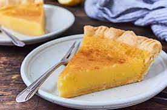

Lemon Chess Pie

Description
This is a vintage lemon pie that uses a small amount of flour or cornmeal for thickening.
It first appeared in print in the late nineteenth century.
Ingredients
- 1 tablespoon yellow cornmeal
- 1 1/2 tablespoons cornstarch
- 1 2/3 cups granulated sugar
- 1/2 teaspoon table salt
- 6 tablespoons butter, melted
- 3/4 cup lemon juice
- 5 large eggs, whisked briefly
Steps
- Preheat the oven to 375°F.
- Whisk together the cornmeal, cornstarch, sugar and salt.
- Stir in the melted butter, then the lemon juice.
- Add the whisked eggs, stirring until everything is well combined.
- Pour the filling into a chilled pie shell.
- Bake the pie for 45-50 minutes or until the center is set.